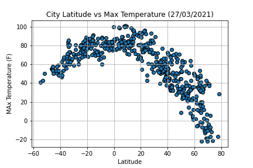

Max Temperature

While there's a strong correlation between latitude and southern hemisphere max temperature, today in the northern hemisphere there's a very strong correlation between latitude and max temperature. It could be a result of earth inclination, whereas in the northern hemisphere it's spring because we get more sunlight during the day, in the southern hemisphere it's autumn.